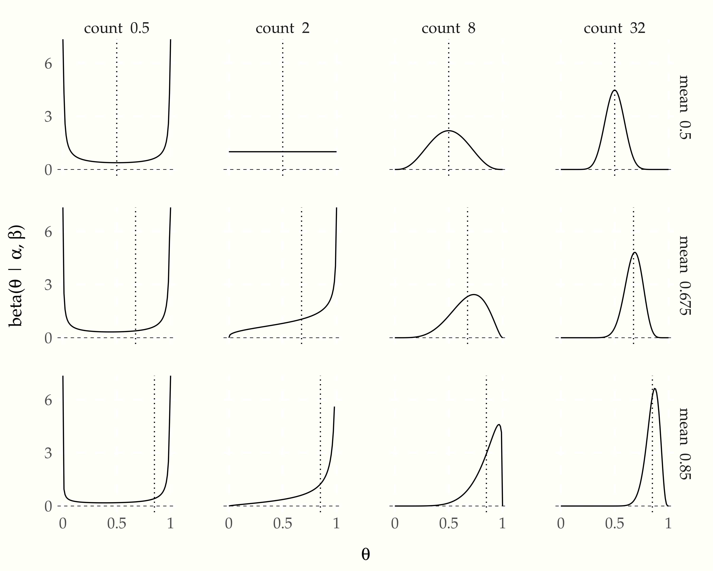
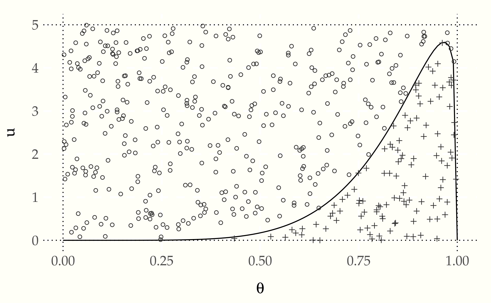
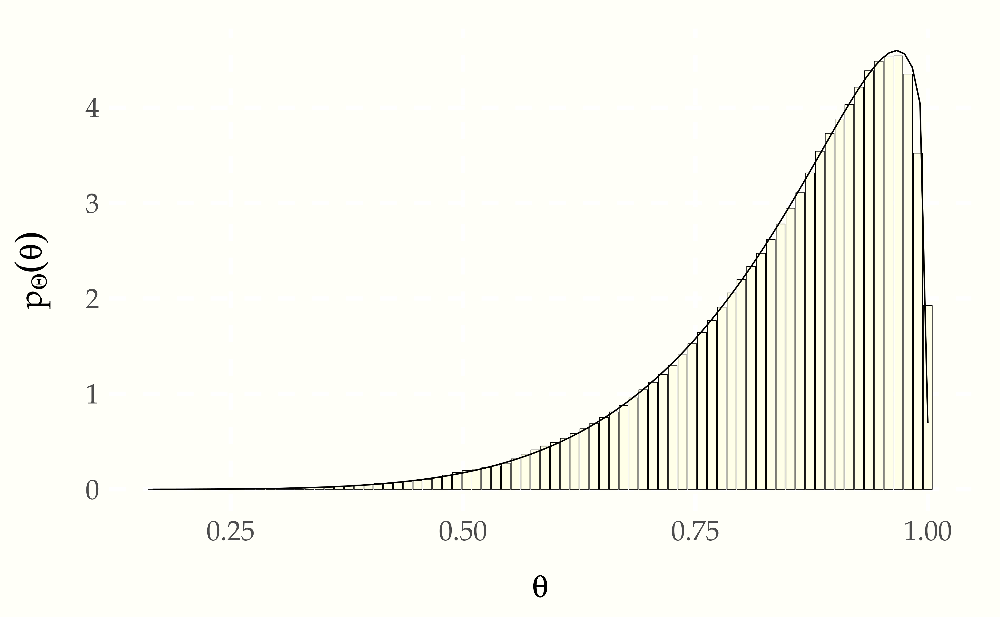

We have so far assumed we have a uniform random number generator that can sample from a \(\mbox{uniform}(0, 1)\) distribution. That immediately lets us simulate from a \(\mbox{uniform}(a, b).\)133 If \[ U \sim \mbox{uniform}(0, 1) \] then \[a + U \times (b - a) \sim \mbox{uniform}(a, b).\] But what if we want to simulate realizations of a random variable \(Y\) whose density \(p_Y\) is not uniform?
If we happen to have a random variable \(Y\) for which we can compute the inverse \(F^{-1}_Y(p)\) of the cumulative distribution function for \(p \in (0, 1),\)134 If \(F^{-1}_Y(p) = y\) then \(F^{-1}(y) = \mbox{Pr}[Y \leq y] = p.\) then we can simulate random realizations of \(Y\) as follows. First, simulate a uniform draw \(U\),
\[ u^{(m)} \sim \mbox{uniform}(0, 1), \]
then apply the inverse cumulative distribution function to turn it into a simulation of \(Y\),
\[ y^{(m)} = F^{-1}(u^{(m)}). \]
It turns out we’ve already seen an example of this strategy—it is how we we simulated from a logistic distribution right off the bat. The log odds transform is the inverse cumulative distribution function for the logistic distribution. That is, if
\[ Y \sim \mbox{logistic}(0, 1), \]
then
\[ F_Y(y) = \mbox{logit}^{-1}(y) = p \]
and hence
\[ F^{-1}_Y(p) = \mbox{logit}(p) = y. \]
This lets us simulate \(Y\) by first simulating \(U \sim \mbox{uniform}(0, 1)\), then setting \(Y = \mbox{logit}(U)\). Both the log odds function and its inverse are easy to compute. Often, the inverse cumulative distribution function is an expensive computation.135 In general, the inverse cumulative distribution function \(F^{-1}_Y(p)\) can be computed by solving \[F_Y(u) = \int_{\infty}^u p_Y(y) \, \mathrm{d} y = p\] for \(u\), which can typically be accomplished numerically if not analytically.
As a first non-trivial example, let’s consider the beta distribution, which arises naturally as a posterior in binary models. Recall that when we have a binomial likelihood \(\mbox{binomial}(y \mid N, \theta)\) and a uniform prior \(\theta \sim \mbox{uniform}(0, 1)\), then the posterior density is
\[ p(\theta \mid y) \ \propto \ \theta^y \times (1 - \theta)^{N - y}. \]
This turns out to be a beta distribution with parameters \(\alpha = y + 1\) and \(\beta = N - y + 1\). If a random variable \(\Theta \in (0, 1)\) has a beta distribution, then its density \(p_{\Theta}\) is
\[ \mbox{beta}(\theta \mid \alpha, \beta) \ \propto \ \theta^{\alpha - 1} \times (1 - \theta)^{\beta - 1} \]
for some \(\alpha, \beta > 0\).136 We prefer to present densities up to normalizing constants, because the normalizing constants are distracting—what matters is how the density changes with the variate. Here, the fully normalized distribution is \[\mbox{beta}(\theta \mid \alpha, \beta) \ = \ \frac{1}{\mbox{B}(\alpha, \beta)} \, \theta^{\alpha - 1} \times (1 - \theta)^{\beta - 1},\] where Euler’s beta function, which gives its namesake distribution its name, is defined as the integral of the unnormalized beta density \[ \mathrm{B}(\alpha, \beta) \ = \ \displaystyle \int_0^1 \theta^{\alpha - 1} (1 - \theta)^{\beta - 1} \, \mbox{d} \theta.\] Hence, it’s clear the beta density integrates to 1 for any \(\alpha, \beta\).
If \(Y \sim \mbox{beta}(\alpha, \beta)\), then its expected value is
\[ \mathbb{E}[Y] = \frac{\alpha}{\alpha + \beta}. \]
It is convenient to work with the beta distribution parameters in terms of the mean \(\alpha / (\alpha + \beta)\) and the total count \(\alpha + \beta\).137 Distributions have means, random variables have expectations. The mean of a distribution is the expectation of a random variable with that distribution, so the terms are often conflated. The higher the total count, lower the variance. For example, here is a plot of a few beta distributions organized by total count and mean.
Figure 8.1: Plots of the densities \(\mbox{beta}(\theta \mid \alpha, \beta)\) for different total counts \(\alpha + \beta\) and different means \(\alpha / (\alpha + \beta).\) The vertical dotted lines are drawn at the mean. Only the distribution with 0.5 mean has a symmetric density; the other densities are skewed toward the right and thus have means to the left of their modes (maxima), where the modes exist.
For example, a total count of \(\alpha + \beta = 8\) and mean of \(\alpha / (\alpha + \beta) = 0.85\) corresponds to beta distribution parameters \(\alpha = 8 \times 0.85 = 6.8\) and \(\beta = 8 \times (1 - 0.85) = 1.2.\)
The plot shows that when the mean is 0.5 and the count is 2 (i.e., \(\alpha = \beta = 1\)), the result is a uniform distribution. The algebra agrees,
\[ \begin{array}{rcl} \mbox{beta}(\theta \mid 1, 1) & \propto & \theta^{1 - 1} \times (1 - \theta)^{1 - 1} \\[4pt] & = & 1 \\[4pt] & = & \mbox{uniform}(\theta \mid 0, 1). \end{array} \]
The area under each of these curves, as drawn, is exactly one. The beta distributions with small total count (\(\alpha + \beta\)) concentrate most of their probability mass near the boundaries. As the count grows, the probability mass concentrates away from the boundaries and around the mean.138 Nevertheless, in higher dimensions, the curse of dimensionality rears its ugly head, and concentrates the total mass in the corners, even if each dimension is independently distributed and drawn from a distribution concentrated away from the edges in one dimension. The reason is the same—each dimension’s value squared just pulls the expected distance of a draw further from the multidimensional mean.
Each of these distributions has a well-defined mean, as shown in row labels in the plot. But they do not all have well defined modes (maxima). For example, consider the beta distribution whose density is shown in the upper left example in the plot. It shows a U-shaped density for a \(\mbox{beta}(0.25, 0.25)\) distribution, which corresponds to mean \(0.5 = 0.25 / (0.25 + 0.25)\) and total count \(0.5 = 0.25 + 0.25\). As \(\theta\) approaches either boundary, 0 or 1, the density grows without bound. There is simply no maximum value for the density.139 Despite the lack of a maximum, the area under the density is one. The region of very high density near the boundary becomes vanishingly narrow in order to keep the total area at one.
How do we sample from a beta distribution? Rejection sampling is very simple algorithm to sample from general distributions for which we know how to compute the density. It is a good starter algorithm because it is easy to understand, but points the way toward more complex sampling algorithms we will consider later.
Let’s start with the simplest possible kind of rejection sampling where we have a bounded distribution like a beta distribution. The values drawn from a beta distribution are bounded between 0 and 1 by construction. Furthermore, if \(\alpha, \beta > 1\), as we will assume for the time being, then there is a maximum value for \(\mbox{beta}(\theta \mid \alpha, \beta)\).140 The maximum density occurs at the mode of the distribution, which for \(\\mbox{beta}(\\theta \\mid \\alpha, \\beta)\) is given by \[\\theta^* = \\frac{\\alpha - 1}{\\alpha + \\beta - 2}.\]
For concreteness, let’s start specifically with a \(\mbox{beta}(6.8, 1.2)\) distribution, corresponding to the mean 0.85 and count of 8 case from the previous section. We observe that all values fall below 5, so we will create a box with height 5 and width of 1.141 For an unknown distribution, we could use an optimization algorithm to find the largest value. Next, we draw uniformly from the box, drawing a horizontal position \(\theta^{(m)} \sim \mbox{uniform}(0, 1)\) and vertical position \(u^{(m)} \sim \mbox{uniform}(0, 5)\). The points whose value for \(u\) falls below the density at the value for \(\theta\) are retained.
Figure 8.2: A simple instance of rejection sampling from a bounded \(\mbox{beta}(6.8, 1.2)\) distribution, whose density is shown as a solid line. Points \((\theta, u)\) are drawn uniformly from the rectangle, then accepted as a draw of \(\theta\) if \(u\) falls below the density at \(\theta\). The accepted draws are rendered as plus signs and the rejected ones as circles. The acceptance rate here is roughly 20%.
More specifically, we keep the values \(\theta^{(m)}\) where
\[ u^{(m)} < \mbox{beta}(\theta^{(m)} \mid 6.8, 1.2). \]
The set of accepted draws that are retained are distributed uniformly in the area under the density plot. The probability of a draw from rejection sampling for variable \(U\) falling between points \(a\) and \(b\) is proportional to the area under the density curve between \(a\) and \(b\), which is the correct probability by the definition of the probability density function \(p_U\), which ensures
\[ \mbox{Pr}[a \leq U \leq b] = \int_a^b p_U(u) \, \mathrm{d}u. \]
If the intervals are right, the density is right.
To generate a single draw from \(\mbox{beta}(6.8, 1.2)\), we continually sample points \((u, \theta)\) uniformly until we find one where \(u\) falls below the density value for \(\theta\), then return the \(\theta\) value. Because the variable \(u\) is only of use for sampling, it is called an auxiliary variable. Many sampling methods use auxiliary variables. The rejection sampling algorithm written out for our particular case is as follows.
while (true)
u = uniform_rng(0, 5)
theta = uniform_rng(0, 1)
if (u < beta(theta | 6.8, 1.2))
return thetaLet’s run this algorithm for \(M = 100\,000\) iterations and see what the histogram looks like.
Figure 8.3: Histogram of \(M = 100\,000\) Draws from \(\mbox{beta}(6.8, 1.2)\) made via rejection sampling. The true density is plotted over the histogram as a line. The acceptance rate for draws was roughly 20%.
This looks like it’s making the appropriately distributed draws from the beta distribution.142 After we introduce the normal distribution, we will develop a \(\chi^2\) test statistic for whether a given set of draws come from a specified distribution. For now, we perform the inaccurate test known informally as “\(\chi\) by eye.”
As noted in the caption of the plot, the acceptance rate is only 20% for the uniform proposals. This acceptance rate can become arbitrarily bad with uniform proposals as the true distribution from which we want to sample concentrates around a single value. As such, rejection sampling’s value is as a pedagogical example for introducing generic sampling and also as a component in more robust sampling algorithms.
The algorithm could also be extended to higher dimensions, but the problem of rejection becomes worse and worse due to the curse of dimensionality. If the posterior is concentrated into a reasonably small area (even as mildly in our \(\mbox{beta}(6.8, 1.2)\) example) in each dimension, the chance of a random multidimensional sample being accepted in every dimension is only \(0.2^N\), which becomes vanishingly small for practical purposes even in 10 dimensions.143 In ten dimensions, overall acceptance of a uniform draw would be \(0.2^{10}\), or a little less than one in ten million. While this may be possible with patience, another ten dimensions becomes completely unworkable, even with massive parallelism.
The more general form of rejection sampling takes a proposal from an arbitrary scaled density. In the example of the previous section, we used a \(\mbox{uniform}(0, 1)\) distribution scaled by a factor of five. The acceptance procedure in the general case remains exactly the same.
In the general case, suppose we want to draw from a density \(p(y)\). We’ll need a density \(q(y)\) from which we know how to simulate draws, and we’ll need a constant \(c\) such that
\[ c \times q(y) > p(y) \]
for all \(y\).144 This means the support of the proposal distribution must be at least as large as that of the target distribution.
The general rejection sampling algorithm for target density \(p(y)\), proposal density \(q(y)\) with constant \(c\) such that \(c \times q(y) > p(y)\) for all \(y\), is as follows:
while (true)
y = q_rng(y)
u = uniform(0, c * q(y))
if (u < p(y)) return yOur simplified algorithm in the previous section was just a special case where \(q(y)\) is uniform over a bounded interval. The argument for correctness in the more general case is identical—draws are made proportional to the area under the density, which provides the correct distribution.